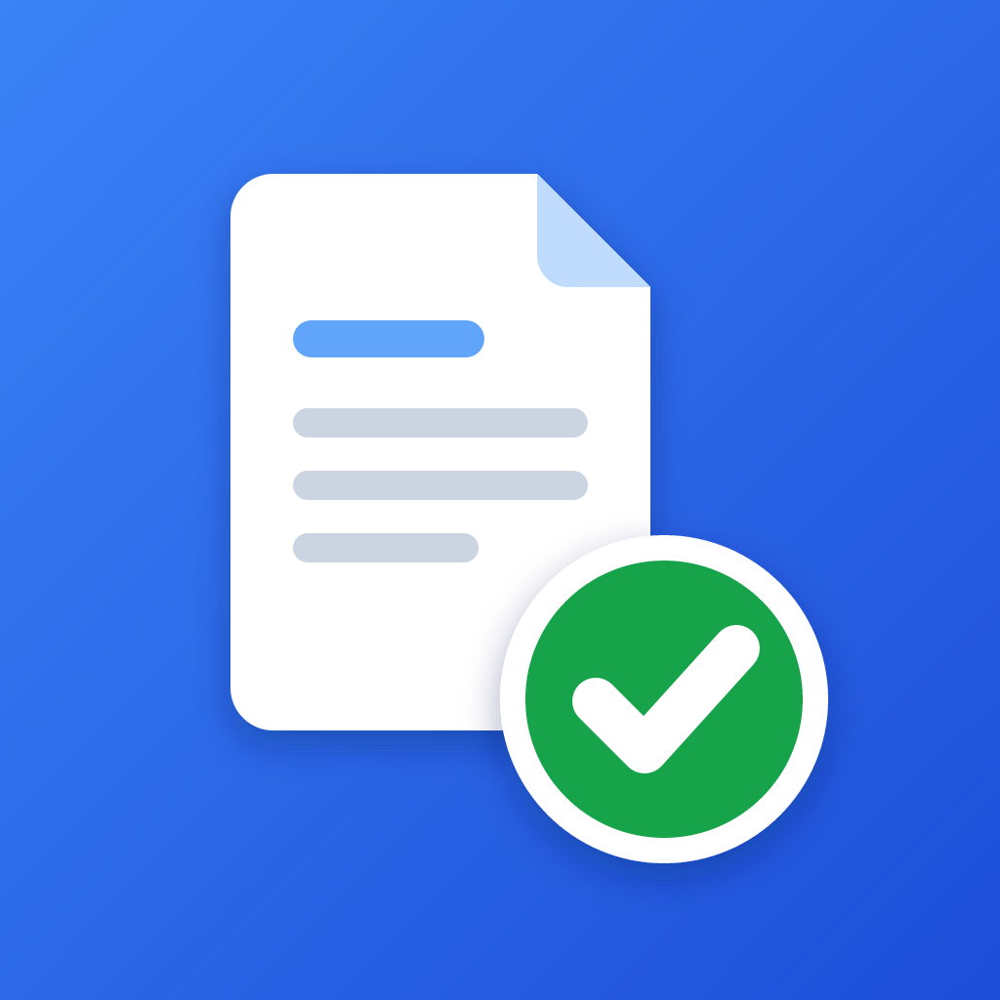

Quick Invoice
Quotes and invoices for tradespeople, made and sent from your iPhone.
Contact
Questions, problems or ideas? Email gnoshcodes@gmail.com. Please say which iPhone and iOS version you have.
Common questions
What does it cost?
Your first 5 invoices or quotes are free to send. After that, Quick Invoice Pro is a monthly or yearly subscription through the App Store. With or without Pro, you can always record payments, send receipts, resend or remind about anything already sent, and back up or export everything.
I already pay for Pro, but the app asks me to subscribe
Open the app, go to the Business tab, and under Your plan tap Restore purchases. Use the same Apple Account you subscribed with.
How do I cancel my subscription?
In the app, go to Business › Your plan › Manage subscription. Or, on your iPhone, open Settings, tap your name, then Subscriptions. Pro keeps working until the end of the period you paid for.
Where are my invoices kept?
Only on your iPhone, and in your iPhone’s iCloud backup if that’s on. There’s no account and no server, so we can’t see or recover your records.
How do I move to a new phone or keep a safe copy?
In the Business tab, under Backup, tap Save a backup and save the file somewhere safe, like iCloud Drive. On the new phone, install Quick Invoice and tap Restore from a backup. Restoring your whole iPhone from an iCloud backup brings Quick Invoice’s data along too.
Can I export for my accountant?
Yes. In the Business tab, under For your accountant, use Export invoices or Export payments to get a CSV file that opens in Numbers, Excel or Google Sheets.